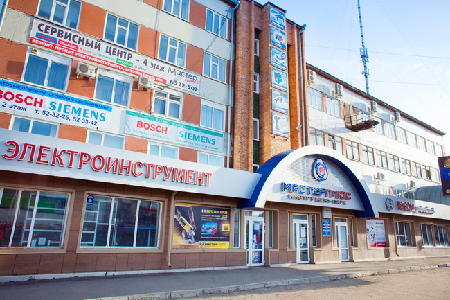

О нас
Мастер Плюс» на томском рынке инструментов работает с 2000г. Компания является одним из лидеров продаж в сфере электроинструмента, бензотехники, аккумуляторного и ручного инструмента от ведущих мировых производителей и отечественных марок. На сегодняшний день «Мастер Плюс» является официальным представителем большинства ведущих мировых брендов: Bosch, Metabo, DeWalt, Makita, Fubag, Endress, Maktec, Novus, Sial, Staer, Stihl, а так же российских и украинских производителей. Помимо этого, салон Мастер Плюс является единственным в Томске прямым дилером немецких фирм Festool и Protool и имеет статус BSS –партнера Bosch в Томске. В торговом центре «Мастер Плюс» представлен широкий ассортимент инструмента и оснастки для строительства и ремонта: от ножовки и отвертки до мощнейших современных отбойных молотков, дизельгенераторов и станочной техники. У нас Вы всегда сможете найти все необходимые расходные материалы, такие как: буры, сверла, биты, пилки, диски, шлифовальные ленты и многое другое. На весь реализуемый товар «Мастер Плюс» предоставляет гарантийное и послегарантийное обслуживание.
